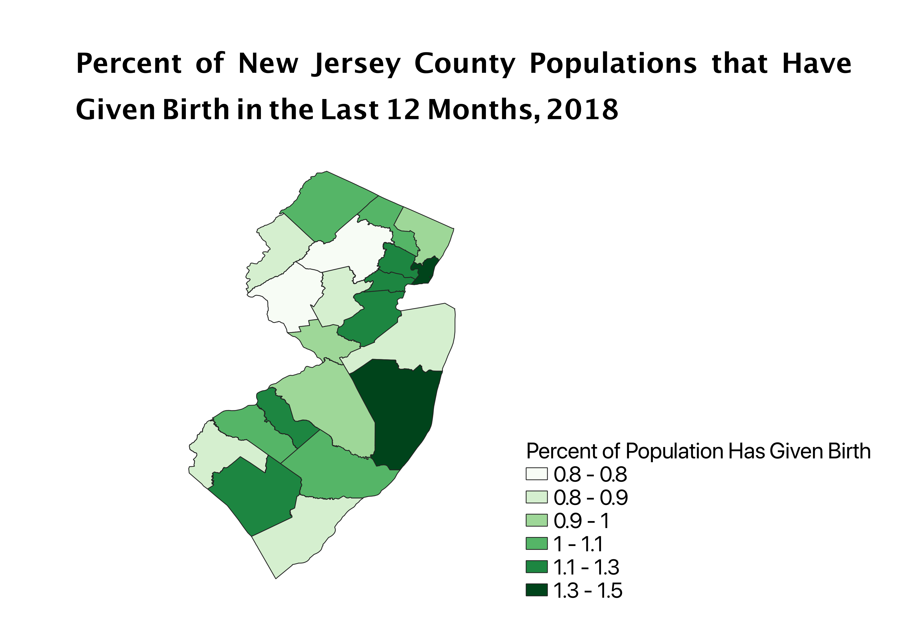
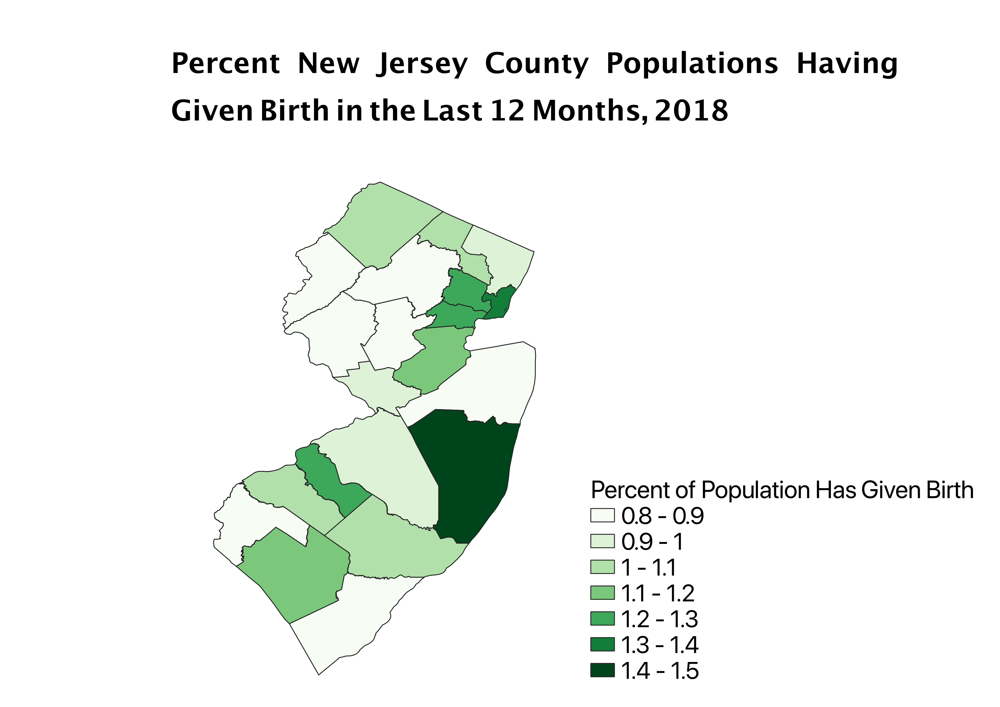
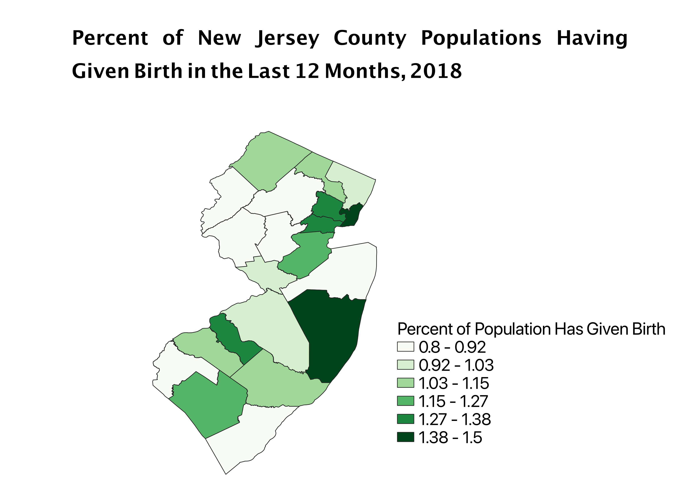

Homework 8: Census Data Ratios and Categories
Maeve Goldberg
For these maps I used data of how many women had given birth in the last 12 months in each New Jersey county and compared it to the county population data to create the percent of the county population that had given birth in the last year. I wanted to use that ratio because the first choropleth map that I created showed only the number of women who had given birth, which was basically just a map of where most people live in New Jersey. With this ratio however you can actaully compare across counties to see where more women have given birth. To categroize the data in my maps I used three different classifications: natural break, pretty break, and equal interval.
Natural Breaks Classification
The natrual breaks classification is a good choice becauses its classficiations reflects the data, however, it is not the best choice for classification if you want to do analysis based on specific critera.

Pretty Breaks Classification
The WGS 84 projection preserves directionality, however the size and shape are distorted and become more so at the poles.

Equal Interval Classification
The WGS 84 projection preserves directionality, however the size and shape are distorted and become more so at the poles.

Data used for this project
CSV dataset
GeoJSON Vector File